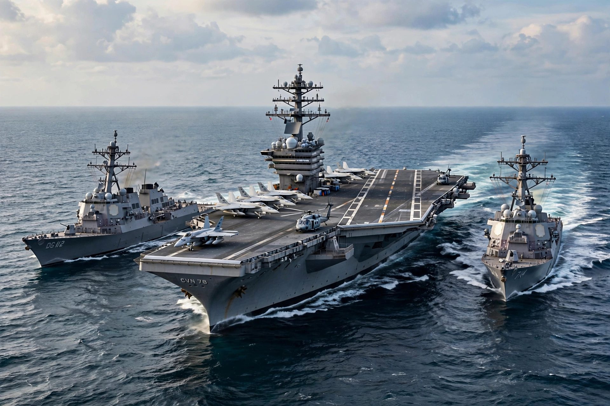

From Wikipedia, the free encyclopedia

A navy, naval force, military maritime fleet, war navy, or maritime force is the branch of a nation's armed forces principally designated for naval and amphibious warfare; namely, lake-borne, riverine, littoral, or ocean-borne combat operations and related functions. It includes anything conducted by surface ships, amphibious ships, submarines, and seaborne aviation, as well as ancillary support, communications, training, and other fields.
The strategic offensive role of a navy is projection of force into areas beyond a country's shores (for example, to protect sea lanes, deter or confront piracy, ferry troops, or attack other navies, ports, or shore installations). The defensive role includes protecting a nation's coast and trade, enforcing blockades, and sea denial. Many navies also operate ballistic-missile submarines as part of a nuclear deterrent.
Naval warfare developed as early states fielded warships — from Egyptian, Phoenician, and Greek galleys (including the trireme) through the Roman navy, Chinese treasure fleets, and the sailing warships of the age of exploration. The industrial era brought steam propulsion, ironclads, dreadnought battleships, and then the aircraft carrier and the nuclear submarine, which dominate modern fleets. Theorists such as Alfred Thayer Mahan argued in The Influence of Sea Power upon History (1890) that command of the sea was decisive for national greatness.
Navies are typically organized into fleets of surface combatants, submarines, naval aviation, marines, and auxiliaries, commanded through a system of ranks from seaman to admiral. Core ship types include aircraft carriers, cruisers, destroyers, frigates, corvettes, patrol vessels, amphibious assault ships, and attack and ballistic-missile submarines.